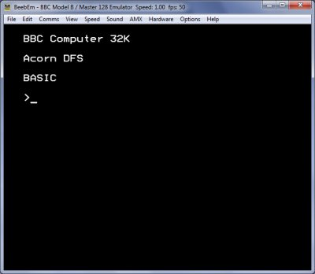

BeebEm - BBC Micro and Master 128 Emulator

|
|
BeebEm - BBC Micro and Master 128 Emulator |
|
Getting StartedBeebEm is distributed with everything you need to get going, just run BeebEm from the Start menu (or run BeebEm.exe if you unzipped it). If BeebEm does not run see the troubleshooting section. When BeebEm starts up you should see a window containing the BBC Micro startup messages.  By default BeebEm will start the BASIC programming language ROM. From here you can load and run disc and tape images, type in commands or write a BASIC program! BeebEm has many features and options available via the menus and keyboard shortcuts. For example, you can use PC joysticks with BeebEm, capture screen shots and videos, run BeebEm full screen and vary the speed of emulation. See the Menu Options section and other help sections for more details. Running a disc imageBeebEm runs BBC Micro software held in disc image files kept on your PC's hard disc. The image files are kept in a set of folders in your 'My Documents\BeebEm' area. Some disc images are supplied with BeebEm, in the 'DiscIms' folder. To run a disc image use the 'Run Disc' option on the File menu. Try running the 'Games.ssd' or 'Test.ssd' disc images included with BeebEm. Downloading disc imagesYou can download more disc images from various internet sites. Visit the software page of the BeebEm website for some links (click 'Download Software' above). When you download a disc image file (and unzipped it if necessary) put the image file into the 'DiscIms' folder in your 'My Documents\BeebEm' area. Do NOT put disc images in the folders under 'C:\Program Files\BeebEm\UserData'. Configuring BeebEmTo get BeebEm running at an optimal speed there are some configuration options that can be changed. BeebEm will display the speed of emulation relative to a real BBC Micro and the number of frames per second (fps) being displayed. You should see these values in the window title bar or at the bottom of the screen in full screen mode. You will usually get best performance (and best looking screen) by enabling the following options on the View menu:
Note: See the FAQ section for notes on menu use in DX9 full screen mode. Once you have decided on good set up you can save it using 'Options - Save Preferences'. Running a tape imageRunning a tape image is a little more complicated that running a disc image. See the Tape Images section for more info. |
Copyright © 2017 Mike Wyatt